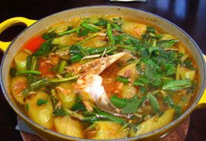

Cùng bắt tay làm thử thôi nào!
Nguyên liệu nấu canh chua cá lóc
- Cá lóc: 1 con khoảng 700-800g.
- Thơm: ¼ quả.
- Cà chua: 2 quả.
- Đậu bắp: 5 quả.
- Dọc mùng: 2 nhánh.
- Giá đậu: 100g.
- Me chua chín: 50g.
- Rau thơm nấu canh chua gồm: hành lá, rau ngổ.
- Gia vị: hành khô, tỏi, muối, hạt nêm, bột ngọt, đường, ớt bột, tiêu, nước mắm, dầu ăn.
Sơ chế nguyên liệu
- Hành khô, tỏi: làm sạch, băm nhuyễn.
- Cá lóc: làm sạch, thái lát vừa ăn, cứa nhẹ trên mỗi lát để cá thấm gia vị. Ướp cá với ½ thìa hành tỏi băm nhuyễn, 1 thìa hạt nêm, ½ thìa nước mắm, ½ thìa bột ngọt, ½ thìa dầu ăn, ½ thìa tiêu để khoảng 15-20 phút.
- Thơm, đậu bắp: làm sạch, cắt lát xéo dài.
- Cà chua: bổ cau.
- Dọc mùng: Tước vỏ, cắt mỏng, bóp qua với một chút muối, rửa sạch, chần nhẹ với nước sôi, để ráo.
- Giá đậu: rửa sạch, để riêng.
- Rau thơm: làm sạch, thái mịn.
- Me chua chín: ngâm với nước ấm, bỏ hạt.
Thực hiện nấu canh chua cá lóc
- Phi thơm 1 thìa hành tỏi băm nhuyễn với dầu ăn, cho thêm ½ thìa ớt bột để tạo màu.
- Cho cá vào đảo nhẹ rồi cho nước vào nấu canh, cho thêm nước me chua và thơm vào, bạn có thể hầm nước xương riêng để canh thêm ngọt nhé.
- Đến khi nước sôi, bạn dùng thìa lớn vớt hết bọt phía trên để nước canh được trong.
- Nước sôi khoảng 3 phút, cá sắp chín tới, bạn cho cà chua, đậu bắp, dọc mùng, giá đậu vào.
- Nêm thêm ¼ thìa muối, ½ thìa đường, 1 thìa hạt nêm, ½ thìa bột ngọt sao cho vừa ăn nhé.
- Khi thấy món canh đã chín tới, bạn tắt bếp, cho rau thơm và hạt tiêu vào là đã hoàn thành món canh chua cá lóc thơm ngon mà cực kỳ đơn giản rồi đấy.
Yêu cầu món canh chua cá lóc
- Món canh chua cá lóc có vị chua chua ngọt ngọt đậm đà, vừa ăn.
- Cá vừa chín tới, ngọt dai, không bị bở, không có mùi tanh.
- Nước canh trong, ngọt thanh.
- Món canh có màu sắc hấp dẫn, các gia vị nấu kèm chín đều, thơm ngon.
Trên đây là bí quyết nấu canh chua cá lóc thơm ngon hơn mà Monan9.com xin chia sẻ cho các bạn. Món canh chua cá lóc là món ăn rất phù hợp và bổ dưỡng cho những bữa ăn hàng ngày của gia đình, bất kể thời tiết nắng nóng hay lạnh gia, món canh này vẫn luôn mang đến cho người ăn sự ngon miệng, hấp dẫn lạ kỳ. Chúc bạn chế biến thành công và ăn ngon miệng nhé.